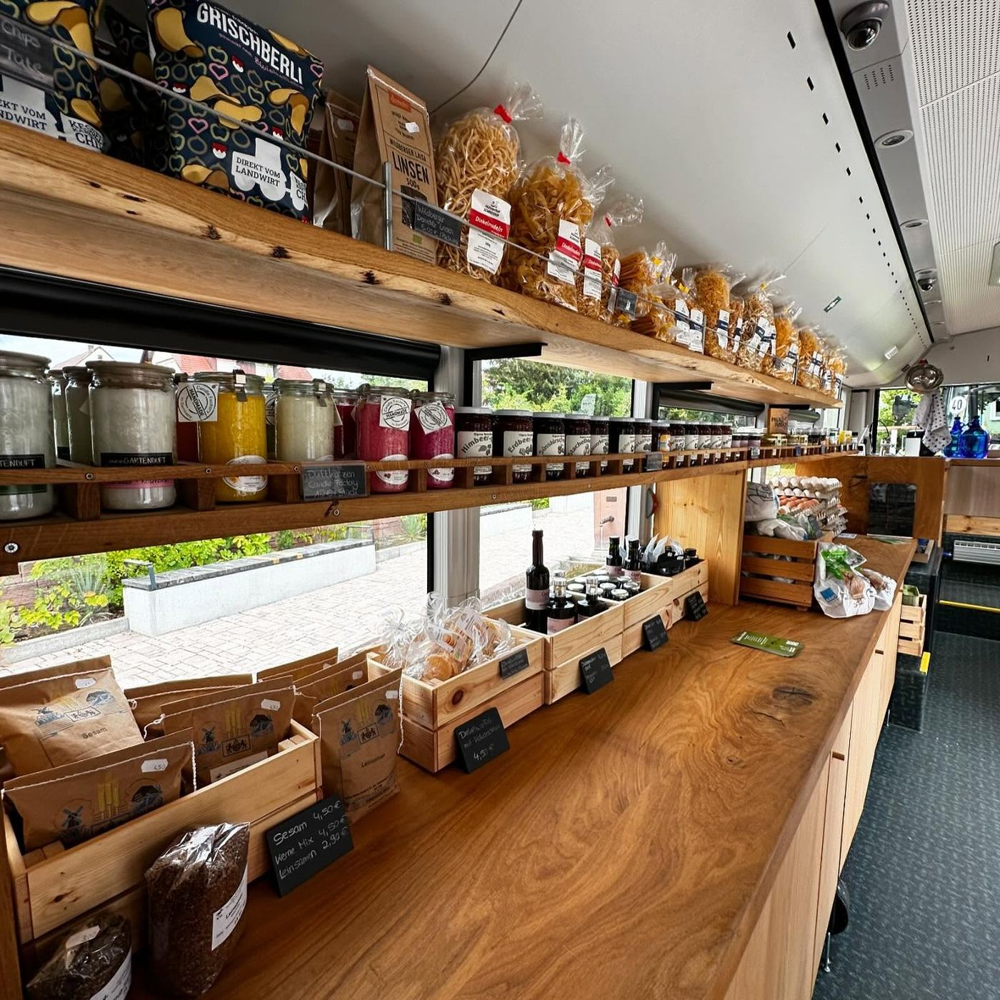
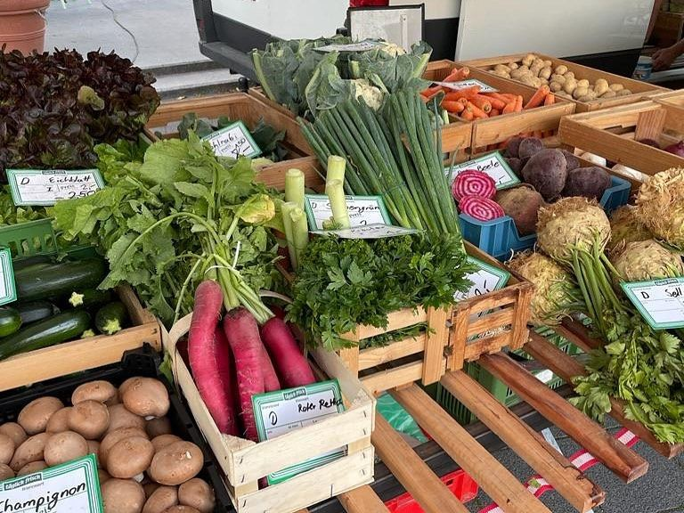
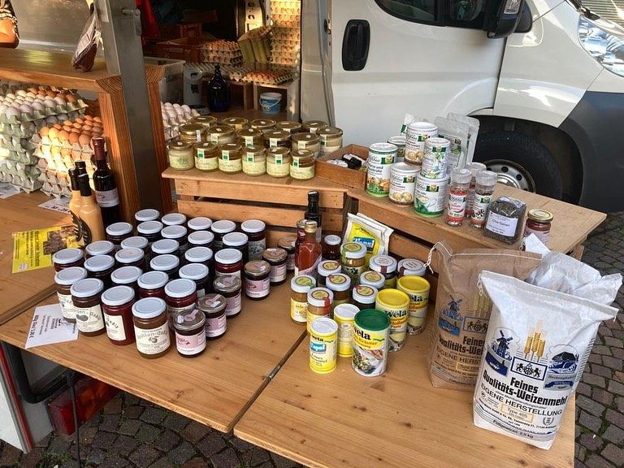

Mobil & Märkte
Mit dem Hofbus und unserem Marktauto bringen wir frische Eier und regionale Lebensmittel zu euch.
Wo sind wir heute?
Heute ist …. So sieht es gerade aus:
Alle Stationen
- Hofbus
- Wochenmarkt
- Hofladen & SB-Lädle
Der Hofbus
Ein umgebauter Bus mit Holzregalen, gezogen vom Traktor. Seit Juli 2024 unterwegs.
Wochenmärkte
Mit Marktauto und Stand – mittwochs in Böblingen, samstags in Gärtringen.
Mit dabei
Eier, Nudeln, Eierlikör, Marmelade, Honig und Mehl – in Böblingen zusätzlich frisches Obst und Gemüse. Ihr könnt auch mit Karte zahlen.


